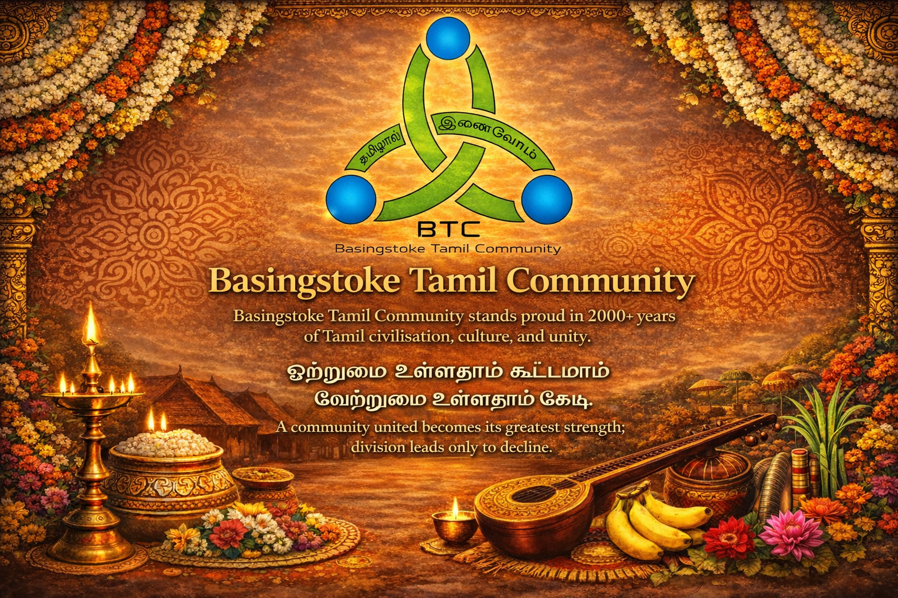
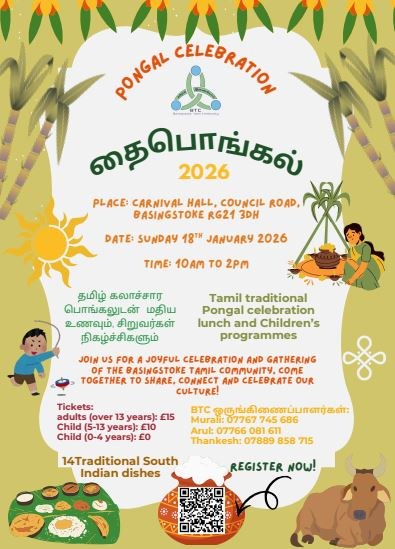
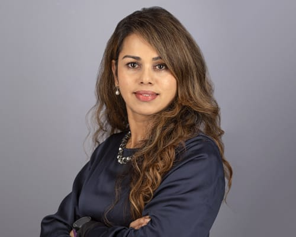

🤝
Belong
Meet people, make friendships and find a welcoming place within the local Tamil community.
A welcoming community for Tamils living in and around Basingstoke — bringing people together through culture, celebrations, friendship, support and shared experiences.

BTC brings together individuals and families from Tamil Nadu, Sri Lanka, Malaysia and other parts of the Tamil diaspora who live in Basingstoke and nearby areas.
Meet people, make friendships and find a welcoming place within the local Tamil community.
Share festivals, traditions and community occasions while creating new memories together.
Promote Tamil arts, music, literature and the language across generations.
Share useful information and practical support for people settling into life in and around Basingstoke.
Create opportunities for children, parents and adults to participate together.
Volunteer, contribute ideas, support events and help shape the future of the community.

Join BTC for a community celebration of Deepavali. Registration is available through the official BTC form.
Our trustees and volunteers help organise activities, support the community and keep BTC moving forward.


Join BTC, attend an event or get in touch to find out how you can contribute.